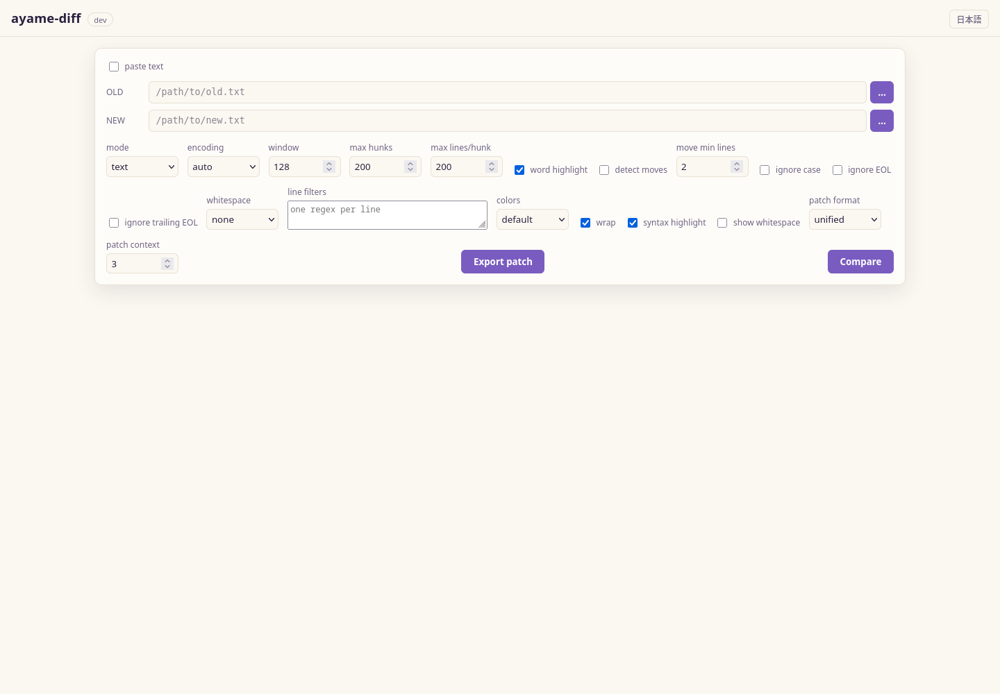

GUI¶
ayame-diff bundles a small local web app so you can compare files in the
browser instead of the terminal. The single-page app is embedded in the binary,
so there is nothing extra to install and no network access to the outside world.

Paths are prominent before the first comparison; after that, editable sticky pane headers replace the initial path rail.
Two subcommands start it:
serve— start the server on a fixed address (localhost by default).gui— start the server on a free localhost port and open your browser.
Local, single-user use only
The server opens the file paths you type in the browser, so it binds to
localhost by default and is meant only for your own local use. Do not expose
it to a network. A non-loopback --addr requires --allow-remote and
prints a warning; anyone holding the URL can drive it, so place it behind
trusted network access controls.
Searching a result¶
Ctrl+F opens a search bar over the comparison result. Matches are highlighted
with a running count; Enter and Shift+Enter step forward and back, and Esc
closes. Toggles narrow it to changed lines only, make it case-sensitive, or
treat the query as a regular expression.
Matching runs against each line's whole text, so anchors ($) and patterns
spanning several syntax tokens work as written. The line-number gutter is not
searched, so a numeric query matches content rather than line numbers. The
number of highlighted matches is capped so a broad query on a very large diff
cannot undo the incremental rendering; the counter shows + when it applies.
Access control¶
Every run generates an API token, and every /api call needs it in an
X-Ayame-Token header. The token rides in the URL that gui opens and serve
prints, and the page keeps it in sessionStorage, so an ordinary reload keeps
working. Open the printed URL — a bare http://127.0.0.1:PORT/ in a fresh tab
has no token and the UI will say so.
Two properties follow from that design:
- No CSRF. A page on another site cannot set a custom header without a CORS preflight, which this server refuses. A cookie would have been attached automatically and would not have protected anything.
- No DNS rebinding. A loopback server also pins the
Hostheader to the address it bound. A page that makes its own hostname resolve to127.0.0.1still sends that hostname inHost, and is refused — even with a valid token.
The embedded page, its assets, and /api/health stay open: the page cannot set
headers for its own sub-resources, and the launching command polls health for
readiness before any browser exists. Neither exposes user data.
A --allow-remote listener does not pin Host, because the names it is
reachable under cannot be known here. The token is the defense there.
serve¶
Starts the web UI and keeps running until you use Stop server in the top bar
or stop it with Ctrl+C, SIGINT, or SIGTERM. Shutdown drains active HTTP
requests before the listener closes; requests that are only waiting — an
external-change watch, for example — are ended at once rather than held for
their full poll window, so a stop returns immediately.
ayame-diff serve # http://127.0.0.1:8080
ayame-diff serve --addr 127.0.0.1:9000
ayame-diff serve --addr 0.0.0.0:8080 --allow-remote
| Flag | Default | Meaning |
|---|---|---|
--addr |
127.0.0.1:8080 |
Listen address (host:port). |
--allow-remote |
off | Explicitly allow a non-loopback listen address. The API token still applies; the Host pin does not. |
If a requested fixed port is already in use, the command reports the conflict and binds the next available port instead.
gui¶
Same UI as serve, but it picks a free localhost port and launches your default
browser — the "double-click to a GUI" experience without a native webview
dependency.
ayame-diff gui # pick a free port and open the browser
ayame-diff gui --no-open # start the server but don't open a browser
| Flag | Default | Meaning |
|---|---|---|
--addr |
127.0.0.1:0 |
Listen address; port 0 picks a free port. |
--allow-remote |
off | Explicitly allow a non-loopback listen address. The API token still applies; the Host pin does not. |
--no-open |
off | Start the server but do not open the browser. |
An explicitly requested fixed GUI port uses the same next-port fallback;
the default port 0 already asks the operating system for a free port.
Each gui browser tab holds an authenticated lease. Closing the last tab
releases that lease and stops the server after a short reload grace period, so
a double-click launch does not leave an orphan process. A tab or browser that
crashes without sending its release expires after 90 seconds. With --no-open,
open the printed URL within 90 seconds. The explicit Stop server button
remains available in both gui and serve.
Using the web UI¶
Enter the LEFT and RIGHT file paths (or use the server-side file picker)
and choose what to compare — two files, three files (a 3-way merge, which
adds a BASE field), or a folder. Set the comparison options (encoding, resync
window, ignore-case, whitespace handling, EOL controls, absorb re-indentation
to keep a re-indented file aligned, repeatable regex filters
entered one per line), then Compare. The result is shown as a side-by-side
grid with per-hunk headers, line numbers and word-level highlighting. Syntax highlight adds syntax coloring for common source,
data, markup, and log formats; the file extension selects the language and the
toggle is remembered in the browser. For languages whose multi-line constructs
it models — block comments, JavaScript/TypeScript template literals, Go raw
strings, Python triple-quoted strings, and shell heredocs — it carries state
across consecutive rendered lines, so such a construct is colored through to its
end. It operates only on rendered diff rows, so it does not scan or retain the
complete input file: a construct that starts before the first rendered line of a
hunk, or spans an omitted gap between hunks, is not tracked and left with the
line-local coloring. When that accurate pass is unavailable — an unknown
extension, a data/markup/log format, an older front end, or an error — the view
falls back to the previous line-local highlighting, unchanged. See
ADR 0006 for why a tree-sitter
grammar is not shipped yet. Choose patch format (normal, context, or
unified) and a context-line count, then use Export patch to download an
applyable ayame.patch. Patch export preserves CRLF and missing-final-newline
markers and rejects binary/NUL input. Export is available in text mode only; a
patch of a sorted view would not apply safely to the original file.
How a result is read is separate from what was compared. The result toolbar
carries a Read as choice — text, sorted, or csv / tsv — and switching
it re-runs the same inputs under the new reading, so a wrong guess can be tried
and reverted without re-entering anything. The choice is offered only where it
means something: a folder comparison has no reading, and a three-file comparison
can be read as text or CSV but not sorted. The sorted view's numeric/reverse
controls and the CSV setup appear as the reading requires them.
Every result opens with a Statistics panel that describes the change before
the rows. A text or sorted result shows the whole-file context — the changed
line count and its share of the file, and the largest hunk — alongside the
per-kind totals. Export CSV downloads the panel as a long-format table
(section,column,metric,value) and Export JSON downloads the same summary
as JSON; both are built from the summary already in the browser, so exporting
never re-runs the comparison.
The same Export menu carries Export report, which writes a confirmation/verification record of the review: the compared inputs with their sizes, modification times, detected encodings and SHA-256 hashes; the applied comparison conditions (ignore settings, line filters, sync points, window and move detection); the difference totals; every ignored hunk with its reason; the read/unread review state; and the versioned URL state needed to rerun the comparison. Choose a printable, self-contained HTML report, Markdown, or JSON. The compared content is left out by default; tick embed compared content only when the report may be shared with what the files contain. Confirmed-hunk tracking arrives with #288, so a report from this build states plainly that no confirmed hunks are recorded.
After a result appears, the initial path rail is removed from the work area.
Each sticky pane header identifies its side and carries an editable path, a
server-side browse button, detected encoding and line count where available.
Press Enter or leave an edited field to compare that replacement immediately;
the ⇄ control swaps LEFT and RIGHT. Re-comparison restores the logical line that
was in view rather than returning to the first difference.
Comparison conditions and the default¶
Everything under Comparison conditions — ignore case, whitespace, EOL
handling, line filters, and move detection — starts from a saved default.
Changing one gives the current comparison its own value; the saved default is
left alone until you press Make default. The chip beside the heading names
the scope in effect (Using default, or This comparison only · N from
default) and the group's badge counts how many conditions differ, so a
one-off tweak is visible instead of silently becoming the next visit's default.
Reset to default puts the saved values back. Loading a comparison URL or an
.ayamediff project applies its conditions as a session override as well, so
opening a shared link never rewrites your default. Only the condition group
follows this rule; engine tuning and per-mode options are not part of the saved
default.
Editing a pane¶
Edit in the result toolbar opens both files for editing. It appears for a
two-file text comparison of real files: pasted text has nowhere to save to,
and sorted, csv / tsv, folder and three-way views reshape or reorder rows,
so a row there no longer addresses a line in a file.
Turning it on loads both files in full — up to 8 MiB each — and compares what is
in the panes rather than what is on disk. Click a line, or focus it and press
Enter, to edit it; Enter commits, Escape restores the line as it was, and
moving away commits too. The comparison catches up when a line is committed
rather than on every keystroke, and an IME composition is left alone until it
ends, so Japanese input is not interrupted mid-word.
A committed line is shown immediately: the edited cell is painted from the
buffer and marked provisional, with a bar that says the result is being
recomputed. The authoritative comparison then replaces the whole result and the
logical line that was in view is restored, so nothing jumps. Commits are
coalesced: an edit made while a comparison is running queues one catch-up run
rather than one comparison each, and starting the new comparison cancels the
previous request. The provisional guess re-judges that one line as same/changed
only for a plain exact text comparison; with ignore case, a whitespace rule,
ignore EOL, line filters, move detection, sync points, or a line whose
counterpart is not on screen, it shows the typed text and leaves the
classification to the server. A comparison-condition change has no honest local
approximation, so it keeps the usual progress placeholder until the result
arrives, and this pane edits line content only — line insertion and deletion are
not operations it performs.
Each pane header carries its own state: a marker when it holds unsaved lines, a
Save button for that side alone, and a read-only badge when the file
cannot be written. Ctrl+S saves the pane being edited. A save preserves the
file's encoding, BOM, line terminator and final-newline state — an edited line
does not quietly convert the rest of the file. If the file changed on disk after
it was opened, the save is refused and offers to overwrite instead of discarding
the other change silently. Leaving the page with unsaved lines warns first, and
an external change no longer reloads over unsaved work: the reload bar asks.
Two kinds of difference are on screen at once while editing, and they stay
visually distinct. How the two compared files differ is the cell shading, plus
the -/+ marker in the unified view. A line whose text differs from the file
the buffer loaded — something you typed this session — carries its own handle in
the gutter: an accent bar with a glyph (~), not shading. Click a handle to put
that whole run of lines back to what was loaded, or focus the line and press
Delete. Saving clears the handles; discarding the edits clears them too, so no
stale mark outlives the change it pointed at.
Anything that would replace what is being edited — a different path, a mode switch, turning on pasted text — asks first and stays put if you decline; re-comparing and changing comparison or display options keep the buffers and do not ask.
Editing changes lines; it does not add or remove them, and the comparison settings continue to apply as they do while reading.
Display width and CJK alignment¶
Columns line up only when a single font renders both the Latin and the CJK on a
line, because CSS chooses fonts per character. If a Latin-only monospace face is
listed before any CJK-capable one, a line such as name 名前 uses two fonts whose
advance widths need not be exactly 1:2, and the columns drift. The family stack
therefore leads with faces that cover both scripts — Noto Sans Mono CJK JP,
Source Han Mono JP, and the Windows-bundled MS Gothic — before the Latin-only
fallbacks. If none of those is installed, a system cannot align mixed lines on
its own; installing Noto Sans Mono CJK JP restores it.
Two display settings refine this and share their meaning with the CLI:
- tab size (
2,4, or8, default8) is applied as a CSStab-sizetoken. The CLI does not expand tabs:internal/textwidthcounts a tab as zero cells and a terminal expands it at its own tab stop, so there is no single CLI tab width to match. The GUI makes the width explicit and defaults to the common terminal value of 8. - wide ○ ※ α (
East Asian Ambiguouscharacters) mirrorsinternal/textwidth'sOptions.EastAsianAmbiguousWideand the CLI's--east-asian-ambiguous-wide. It is off by default, matching terminals that render these as one cell; turn it on when the font renders them full-width.
What is tested is the width/alignment decision both halves share, not the pixel
result: the GUI's textwidth.js is checked against the CLI's internal/diffout
output and internal/textwidth for the same input, but the glyph advances the
browser actually paints still depend on the font installed.
Progress and messages¶
A running comparison writes to its own progress line, and the outcome of an
operation — saved merge, exported patch, failed compare — joins a separate
message lane below it. Messages stack instead of replacing each other, so the
result of the previous attempt is still readable after the next one starts. A
success withdraws itself after a few seconds; a warning or a failure stays until
it is dismissed with its close button or with Escape while it holds focus. A
message that repeats is counted on its existing line rather than stacking a
duplicate, and each line carries the time it arrived.
A text comparison's progress line reports which phase it is in — reading the
inputs, comparing, detecting moved blocks, sending the result, rendering — with
the time that phase has taken, not just how long the run has lasted. A phase
with a real count shows it (the streamed result pages, the rendered hunks); the
phases that have none stay indeterminate instead of inventing a percentage. The
result is streamed in bounded pages, so the first hunks can be read while the
rest is still arriving, and the unchanged-context regions are filled in once the
hunk geometry is known. When maxHunks cuts hunks away or maxLines cuts a long
hunk short, the GUI warns in the message lane before the truncated result is
read, so the limit can be raised then instead of being discovered while reading.
Cancel aborts the in-flight request immediately.
A large result is painted in slices rather than in one blocking pass, so scrolling and input stay responsive while it builds; Cancel stops a render that is already under way, not only a request still in flight.
Accessibility and keyboard use¶
Nothing in the diff depends on seeing colour. Added lines carry + and deleted
lines carry - in the gutter of both the side-by-side and unified views, and
each hunk header names its kind (+ Insert, − Delete, ~ Replace,
MOVED #…). A three-way conflict carries ≠. In forced-colours mode, where
every wash is replaced by system colours, the glyph is still there: it is the
marker, not the background, that says which line is which.
Assistive technology receives the same fact in words. Each diff row is named
added, deleted or modified alongside its line number, and each hunk is a
labelled group. The application keeps a single polite live region for
navigation feedback — the position after Alt+↓, a search step, or a merge
choice — while a failure is announced assertively through the message lane. The
visible counters (difference position, search hit count, unresolved count) are
not live regions of their own; the controls that change them describe themselves
with the count instead, so a keypress does not queue several announcements.
The whole flow is keyboard-only. Tab/Shift+Tab reach every control,
Alt+↓/Alt+↑ (or Alt+Home/Alt+End) move between differences, Alt+←/
Alt+→ (and Alt+B in three-way) adopt a side, Ctrl+F searches, Ctrl+S
saves an edited pane, and Escape closes the search and every dialog. The focus
ring is visible on every control, including the diff rows and the minimap.
Two limitations are worth stating. Off-screen hunks use CSS
content-visibility: auto so that a very large diff does not lay out the whole
document at once; some browsers also omit that off-screen content from the
accessibility tree until it has been scrolled into view. Bring a hunk on screen
with the difference navigation before reading it, since the position is
announced as you move. The minimap is a compact overview, not a text document;
it is keyboard operable as a scrollbar, but its markers carry no text.
The markers, the live-region layout and the focus-ring coverage are pinned by
automated tests that run in CI: Go tests read the served assets and a
node --test suite executes the pure mapping. A full axe or Lighthouse pass
would need a headless browser and a Node dependency the project does not carry,
so it stays a manual check in the
GUI regression checklist.
External changes¶
Auto-reload external changes is enabled by default in the View menu for
file-backed text, sorted, csv / tsv, and three-way comparisons. Saving a
compared file in another editor triggers one debounced re-comparison and keeps
the same logical row at the same screen offset. Atomic-save sequences and
several writes close together are coalesced before the comparison starts.
The browser uses authenticated fetch long polls, so the watch request carries
the same X-Ayame-Token as every other filesystem API. At most the three
BASE/LEFT/RIGHT paths are watched, and abandoned requests stop when the page,
paths, mode, or preference changes. If a future editable result has unsaved
changes, automatic replacement stops and a bar offers Reload or Keep
current edits.
Pasted text has no source file to watch. Folder comparison also stays manual: recursively polling an arbitrarily large tree on every save would violate the bounded-resource guarantees. Opening a changed folder entry as a text comparison watches that file pair normally.
Theme and colours¶
The View menu chooses a theme (system, light, dark) and a colour scheme (default, colorblind, or custom). Customize colors… opens an editor over the design tokens that drive the whole result: the ground and text colours, the accent and status ramp, the addition/deletion/change washes and their word highlights, and the font family and size tokens. Each edit is painted onto the page as it is made, so the comparison already on screen is the preview rather than a separate sample.
A theme is a JSON object of token overrides with a base (system, light, or dark) and a name. Save stores it in the browser under that name and lists it in the editor; Copy JSON and Import JSON move a theme between machines, so a team can standardise a palette. Reset to preset returns to a shipped preset (Ayame Light/Dark, WinMerge, VS Code Dark+, Solarized Light, or High contrast).
Under the token editor the dialog reports the WCAG contrast ratio of each foreground/background pair the palette implies — body text on the ground, the accent button label, and each diff foreground over its wash — and marks every pair below the AA threshold. A custom palette therefore cannot reintroduce the unreadable colour-on-colour case of #150 without a visible warning.
Theme and colour choices are global browser preferences, shared by every tab.
Comparison URLs and browser history¶
After a successful file-backed comparison, the GUI stores the input paths, mode, and comparison conditions in a versioned URL fragment. Reload restores and re-runs that comparison. Comparing different inputs pushes a history entry, while condition changes replace the current entry, so Back and Forward move between complete comparison states.
The fragment is not sent to the server, but it does contain local paths. Copy link in the result toolbar warns about that disclosure and copies a URL with the API token removed. The copied URL grants no access by itself; open ayame-diff normally first so the browser session has its own token.
Pasted scratch text is intentionally excluded. URL state is capped at 32 KiB;
use an .ayamediff project for very large CSV column selections.
Display preferences — wrap, word highlight, syntax highlighting, whitespace, theme, colours and the view — are stored once and apply to every comparison. Comparison conditions are stored per comparison, keyed by the mode and input paths, so reopening a comparison restores the conditions it was run with and a different pair starts from the defaults.
Multiple comparisons (tabs)¶
Several comparisons can stay open at once. After the first successful comparison a tab bar appears above the paths; ＋ opens a new tab from the current comparison (change one side and Re-compare), and the × on a tab closes it. The active tab is highlighted, and closing the active tab activates its neighbour.
Each tab keeps its own inputs, mode, comparison conditions, and scroll position. Switching tabs re-applies that state and recomputes the result rather than holding every diff in memory, so scroll position survives but a large comparison is paid for again when it is opened. The tab set is stored in the same URL fragment as the active comparison, so a reload restores the open tabs; each history entry carries its own set, so Back returns to the tabs that belonged with that comparison. Copy link still copies one comparison and never the reader's other tabs.
Applied ignore settings are shown in the result summary and in the condition toolbar. They affect matching only: rendered lines and exported patches retain the original text. Whitespace- and case-only differences are not erased: they stay visible as a subdued, chequered hunk with their own ignored-only count (KDiff3's third state), while next/previous navigation, the difference counts, and patch export treat them as equal. A dismissed difference therefore remains auditable instead of being indistinguishable from one that was never there.
Absorb re-indentation separates which lines correspond from which
correspondences count as a difference (#270). Checking it makes whitespace
insensitive only for alignment, so a file that was reformatted or re-indented
keeps every line paired up while the content difference is still reported at
its original position, instead of the whitespace-only lines vanishing. It does
not change what the whitespace setting counts as a difference, and it is a
no-op when that setting already ignores whitespace. The server field is
alignWhitespace.
Browser-dropped files are copied to a private local cache. Each file is limited to 2 GiB and one browser session to 8 GiB; an oversized upload returns a clear HTTP 413 error and its partial staged file is removed. Orphaned session caches become eligible for cleanup after 24 hours when a later session starts.
Navigating differences¶
The sticky navigation bar jumps to the first, previous, next, or last hunk and
shows the current/total and unread count. Keyboard shortcuts are Alt+Down,
Alt+Up, Alt+End, and Alt+Home; the ? button shows this list in the UI.
The location bar on the right draws markers directly from hunk indexes, supports
click-to-jump, and overlays the current viewport. Left/right text stays vertically
and horizontally synchronized because each hunk is rendered as one shared grid
and scroll row rather than two independent panes.
In a merge, moving between differences and moving between conflicts are separate
tasks, so they have separate keys. Alt+Down / Alt+Up walk every difference and
Alt+Home / Alt+End reach the ends, while F8 / Shift+F8 walk only the
conflicts of a three-way result. Alt+Left, Alt+Right, and Alt+B adopt the
left, right, or base side of the current conflict, and Alt+A adopts both
(left's lines followed by right's). Ctrl+Shift+S saves the merge while the merge
panel is open; Ctrl+Enter still runs the comparison. Turn on auto-advance in
the merge panel, or press Alt+Shift+A, to jump to the next unresolved conflict
after each adoption, so the whole merge can be resolved without the mouse. The ?
button lists this default map.
Beside read-on-scroll, each hunk has an explicit Confirm toggle. Scrolling
past a hunk marks it read automatically; confirming is a deliberate action, and
the Confirmed N / M counter tracks it. The ↑✓ / ↓✓ buttons step only
through hunks that are not confirmed yet, while first/previous/next/last keep
walking every difference. A confirmed hunk stays visible and still exports —
confirmation is not ignoring — but its content is dimmed and its minimap marker
is outlined. Confirmations are stored in localStorage, keyed by the
comparison's paths and a signature of each hunk's kind, range, and changed
lines: reopening the same comparison restores them, and a hunk whose compared
content changed loses its confirmation.
Shortcuts are data, not fixed strings: every action is bound in one table and
the ? help dialog is generated from it, so the help cannot describe keys that
no longer fire. Open Customize shortcuts from that dialog to move an action
to another chord, switch between the default and minimal presets, reset to
the preset, or export the whole binding set as JSON. A chord two actions claim is
reported with both names, and chords the browser reserves (such as Ctrl+W) are
refused. The choice is stored in localStorage, so it applies to the whole
browser rather than one comparison.
Enable detect moves to pair exact deleted/inserted blocks. Moved hunks use a
dedicated purple color and an ↔ button in the hunk's action toolbar jumps to
the paired location. Detection
is off by default; move min lines and the engine candidate cap prevent the
optional post-processing pass from dominating huge comparisons.
Context shows unchanged lines at each hunk boundary. The initial number of lines is set under Settings → Result display (default 3); setting it to 0 keeps only the expandable boundaries. Use the up/down buttons to reveal 20 more lines from one edge, click the collapsed-line label to reveal both edges, or drag that label toward the edge to expand. The collapsed label names what it hides rather than only how much: the hidden line range plus an excerpt of the first hidden line, or a symbol/heading when the file is recognised source. Turning Context off returns to a hunk-only view without re-running the comparison. Context ranges are fetched on demand, so opening one boundary does not send the whole unchanged file to the browser; the one-line preview behind the label is fetched the same bounded way and is never unfolded into the result. In the side-by-side view, context lines remain editable on both sides when Edit is active.
Comparison conditions while reading¶
The settings that change what counts as a difference are permanent in the result toolbar, each showing its current value so the policy the result was produced under is readable without opening a dialog: whitespace (ignore amount, ignore all), case, EOL (ignore EOL, ignore trailing EOL, or both), line filters with the number active, and move detection. The toolbar therefore doubles as a status display. Changing a row writes the matching control in Comparison settings and re-runs the comparison; because the inputs are unchanged it replaces the current history entry rather than pushing a new one.
Only the toggles live in the toolbar. Values that tune how much is computed — move min lines, the context line count, and the line-filter definitions themselves — stay in Comparison settings, so the number of toolbar items is fixed and does not grow with the input. The line-filter row reports how many filters are active and opens that part of the dialog to edit them.
Manual alignment and ignored differences¶
When automatic resynchronization picks the wrong lines, click one line on each
side and choose Add sync. Sync points split the diff into independent
intervals, are listed as removable LEFT:RIGHT chips, and trigger an immediate
recalculation. Points must increase on both sides; the API and CLI validate
bounds and ordering. The CLI equivalent is repeatable --sync 100:120 using
1-based line numbers.
Each hunk also has Ignore this difference. Ignored hunks remain visible as
collapsed dashed headers, are excluded from next/previous navigation and unread
counts, and can be restored. Patch export omits them and records the count in
the X-Ayame-Ignored-Hunks response header, so the hidden decision remains
auditable; use declarative line filters (#28) for a permanent rule. Export
report lists each ignored hunk with its coordinates and the reason
manually ignored during review, so the header count is not the only record.
Each hunk carries a small action toolbar anchored to that hunk. Hover the hunk,
move keyboard focus into it, or press its ⋯ handle to open the toolbar; the
handle stays visible, so the actions are discoverable rather than hidden behind
hover. On a device without hover the toolbar is shown outright. Ignore/restore,
the ↔ jump for moved hunks, and the adopt buttons (while merge mode is on)
live there, so each action sits on the change it applies to. The session-wide
controls stay where they were: Add sync and difference navigation remain in
the navigation bar, and All left / All right / All base, Undo, and Redo
remain in the merge panel.
CSV / TSV setup and table result¶
Choose csv / tsv, then Inspect headers. The server reads only the first
logical record and reports detected format/parser and aligned columns. The
searchable column list supports all-column, selected-key, and excluded-key
modes plus Select all / Invert. Parsing, delimiter, compatibility, ignore,
tolerance, resource, temporary-storage, and output settings are available in
the same screen; Review settings summarizes the effective run.
Row & column filter builds comparison conditions without SQL. A condition is
a column, an operator (=, ≠, contains, starts/ends, >, ≥, <, ≤,
numeric range, empty, regular expression), and a value; conditions combine with
AND/OR and nested groups. Row conditions drop non-matching rows before the
comparison, and column conditions ignore columns whose names match — the same
declarative ignore-column mechanism as the text field. Preview matches scans
the inputs and reports LEFT/RIGHT kept rows and kept columns. The built filter is
stored in the project file, and the existing per-line regular expression filters
remain available as an advanced fallback for text.
The result is paged in groups of 100 logical differences. Changed cells alone
use the modification color, header badges show per-column change counts, and
changed columns only hides wide unchanged columns. The Statistics panel
at the top of the result lists every changed column with its count and its share
of the changed rows; a numeric column also reports the sum, mean, and maximum of
right-minus-left and how many values rose, fell, or changed representation only.
The list scrolls rather than being capped, and exports as CSV or JSON. The
server caps the browser response at 5,000 logical differences; Run and export
writes the complete TSV (with _changed_cols) or JSON Lines result to a local
path. Unlike the text view, the CSV table lists differences only and does not
fold unchanged rows, so there is no collapsed bar to label. When explicit key
columns were chosen, the pager names the key range on the current page, and if
the display cap truncates the result the summary also names the key range the
shown differences cover.
When column names disagree, or a column exists on only one side, manual column mapping pairs a left column with a right column by hand, can mark a pairing ignored, and tolerates a side that is missing. Applying it re-runs the comparison. The editor starts from the same name alignment the engine uses; the content-based estimate of #116 is not part of this build, and the source line says so. A saved mapping lives in the project. Result table headers can also be dragged to reorder columns for reading, which changes presentation only.
The summary also names the budget the comparison ran under and whether it had to
spill. The /api/csv/diff response carries a memory object with the resolved
budget_bytes, the server cap, and — only when the engine offloaded work to
disk — the spill_dir; the CSV summary renders it as, for example,
memory 512.0MiB / limit 8GiB spilling to /tmp. The comparison stays cancellable
while it is spilling, and its temporary files are removed after success, failure,
and cancellation.
Making a comparison match¶
Below a CSV result, How to match reads the differences the server already returned and proposes the option changes that would clear them. It attributes differences to column order (align by name), trailing or repeated whitespace, letter case, numeric rounding within a tolerance, or a column that most changes concentrate in (a candidate to ignore). Each card names its likely cause and shows the residual difference count the server measured by re-running the comparison with that one option applied, so "ignore whitespace" reads as "leaves 0" before it is applied. Apply writes the option into the setup form, re-runs the comparison, and refreshes the cards; proposals stack, so the second one is evaluated against the first. The applied normalization set is part of the comparison, so Save project stores it.
See the GUI reachability and placement policy for the full mapping and the rules that keep advanced settings reachable without promoting every engine option onto the result screen.
Folder comparison¶
The folder mode accepts include/exclude globs, hidden-file policy, parallel
worker count, a five-way comparison method, named filter files/sets, and a
boolean metadata filter expression. Preview filter reports selected counts
and exposes a path sample before any content comparison. Folder settings can be
saved in a portable .ayamediff.json project. Results form an
indented, status-colored tree with status filters. Clicking a changed file
switches to text mode and opens the paired relative paths. Symbolic links are
skipped and .gz files compare decompressed content. Flat drops the nesting
and lists the filtered files in path order with their parent folder in a
Location column, so a difference scattered through a deep tree is found without
opening folders one by one; the status filter and search still decide what is
listed, and the selection and scroll position survive switching between the two.
Continuous switches the same result to one scroll through every differing file, so a change set is read straight through instead of opened and returned to once per file. Each file is introduced by a header carrying its relative path, its status and its hunk count; the header sticks while you read that file, and clicking it collapses the file away. The status filter and the path search narrow this view exactly as they narrow the tree; unchanged files are left out, since there is nothing in them to read.
A file's diff is fetched when it comes near the viewport and released again once it has drifted far enough away, so a change set of a hundred files holds only a handful of them at a time and a released file keeps the space it took rather than pulling the page up under you. Difference navigation crosses file boundaries here: it steps hunk to hunk inside the file being read and moves to the next differing file at its edge, loading it if it has not been read yet. The minimap marks the files rather than the hunks, and clicking a mark jumps to that file.
HTTP API¶
The GUI is a thin client over a small JSON API. You can call it directly.
GET /¶
Serves the embedded single-page app.
GET /api/health¶
POST /api/diff¶
Request body:
{
"old": "old.txt",
"new": "new.txt",
"mode": "text",
"encoding": "auto",
"window": 128,
"maxHunks": 200,
"maxLines": 200,
"numeric": false,
"reverse": false,
"ignoreCase": false,
"whitespace": "none",
"alignWhitespace": "none"
}
| Field | Type | Notes |
|---|---|---|
old, new |
string | File paths to compare. |
mode |
string | text (default) or sorted. |
encoding |
string | Same values as --encoding. |
window |
number | Resync window (default 128 when 0). |
maxHunks |
number | Max hunks returned (default 200 when ≤ 0). |
maxLines |
number | Max lines per hunk side (default 200 when 0). |
numeric, reverse |
bool | Sort controls, used when mode is sorted. |
ignoreCase |
bool | Ignore case when comparing. |
whitespace |
string | none, change or all; decides what counts as a difference. |
alignWhitespace |
string | none, change or all; used only to establish line correspondence. change absorbs re-indentation while the difference is still reported (#270). |
syncPoints |
array | 0-based { "old": N, "new": N } forced correspondences. |
ignoredHunks |
array | Stored hunk indexes omitted from patch/report output. |
Success response:
{
"old_lines": 120,
"new_lines": 118,
"hunks": [
{
"kind": "Replace",
"old_start": 10,
"old_len": 2,
"new_start": 10,
"new_len": 1,
"old": ["line a", "line b"],
"new": ["line A"]
}
],
"hunk_count": 1,
"omitted_hunks": 0,
"added": 0,
"deleted": 1,
"modified": 1
}
Each hunk's kind is Insert, Delete or Replace, with old/new arrays
holding the affected lines (truncated to maxLines per side). The optional
move_detection_skipped: true field indicates that move detection was
requested but omitted hunks made a complete result impossible. A whitespace- or
case-only difference the request's ignore options dismissed is returned with
"downgraded": true; such hunks are excluded from hunk_count and the line
statistics, and downgraded_hunks counts them. Errors return
an HTTP 4xx status with a JSON body:
{ "error": "right: open /data/right.csv: no such file or directory",
"code": "file_not_found",
"path": "/data/right.csv",
"side": "right" }
error is the English diagnostic and never disappears. code is a stable
identifier the web UI turns into a localized sentence with a remedy, so a raw
syscall, strconv, or encoding/json string is never what the user reads;
path and side name the input a message would otherwise have to be parsed
for. Codes are added rather than renamed: file_not_found,
permission_denied, invalid_path, invalid_request, overwrite_refused,
unsupported_input, timeout, busy, unauthorized, and internal. Treat
an unknown code as the HTTP status alone would suggest.
Example request¶
curl -s http://127.0.0.1:8080/api/diff \
-H 'Content-Type: application/json' \
-d '{"old":"old.txt","new":"new.txt","mode":"text","ignoreCase":true,"whitespace":"change"}'
POST /api/diff/context¶
Loads bounded source ranges for unchanged-line expansion. The request accepts
the same path/inline text, mode, encoding, and sort fields as /api/diff, plus
ranges:
{
"old": "old.txt",
"new": "new.txt",
"mode": "text",
"encoding": "auto",
"ranges": [
{ "id": 1, "old_start": 7, "new_start": 7, "count": 3 }
]
}
The response echoes each id and start position with old and new line
arrays. A range contains 1–200 lines; one request contains at most 512 ranges
and 20,000 lines in total. Coordinates outside either input are rejected.
POST /api/patch¶
Accepts the same path, inline-text, mode, encoding and comparison fields as
/api/diff, plus:
The response is text/x-diff with Content-Disposition: attachment. Valid
formats are normal, context, and unified; context is non-negative and
defaults to 3 when omitted.
POST /api/report¶
Builds the confirmation/verification report (#296). It accepts the same path,
inline-text, mode, encoding and comparison fields as /api/diff (including
ignoredHunks), plus:
{
"old": "old.txt",
"new": "new.txt",
"format": "html",
"includeContent": false,
"readHunks": [0, 2],
"confirmedHunks": [0],
"comparisonState": { "v": 1, "mode": "text", "paths": {}, "controls": {} },
"reproduceURL": "http://127.0.0.1:9000/#compare=..."
}
| Field | Type | Notes |
|---|---|---|
format |
string | json (default), markdown, or html. |
includeContent |
bool | Embed the hunk lines. Default false; the server never returns compared content unless this is set. |
readHunks |
array | Hunk indexes the reviewer has read. |
confirmedHunks |
array | Hunk indexes confirmed (#288). Omit it when the build has no confirmation tracking; the report then says so instead of guessing. |
comparisonState |
object | The versioned URL state (v, mode, paths, controls) captured by the web UI. |
reproduceURL |
string | A share URL without the API token, recorded verbatim. |
The response is a Content-Disposition: attachment download named
ayame-report.json, ayame-report.md, or ayame-report.html. The report
records the inputs with sizes, modification times, detected encodings and
SHA-256 hashes; the comparison conditions; the totals; every ignored hunk with
its reason; the read/unread state; and the #compare= fragment that replays the
comparison. It covers text and sorted comparisons; CSV, folder, and
three-way reports are not implemented yet.
CSV and file APIs¶
POST /api/file/read returns a whole text file for editing — its lines, the
encoding/BOM/terminator profile a later save restores, a size-and-mtime stamp,
and whether it is writable — refusing anything over 8 MiB. POST /api/file/save
writes lines back through that profile. It requires overwrite: true, and when
the request carries the expect stamp it refuses a file that changed since,
answering 409 with code stale_write unless force is set.
GET /api/files?path=...lists up to 2,000 local directory entries for the setup file picker.POST /api/watchaccepts one to three file paths and an optional priorbaseline. With no baseline it returns the current snapshot immediately; otherwise it waits up to 20 seconds and returns as soon as size, modified time, or mode changes. Re-submit the returnedsnapshotas the next baseline. Directories are rejected so one request cannot imply an unbounded recursive scan.POST /api/csv/inspectaccepts CSV setup JSON and returns first-record schema inspection without scanning data rows.POST /api/csv/diffruns the complete comparison and returns headers, a summary with per-column counts, shares, and numeric deltas, at mostmaxRowslogical JSON cell differences (500by default, hard cap5,000), and amemoryobject naming the resolvedbudget_bytes, the servercap, thespilledflag, and (when a spill happened) thespill_dir.POST /api/csv/exportuses the same request plusoutput,outputFormat(tsvorjsonl), andoutputHeader, and writes the complete local result.POST /api/csv/suggestevaluates a bounded list of candidate option sets (at most 8) and returns only the residual difference count for each, so the UI can price a suggestion without running the full diff view.
These endpoints deliberately accept local paths and are subject to the same local-single-user and explicit remote-mode warnings as the rest of the GUI.